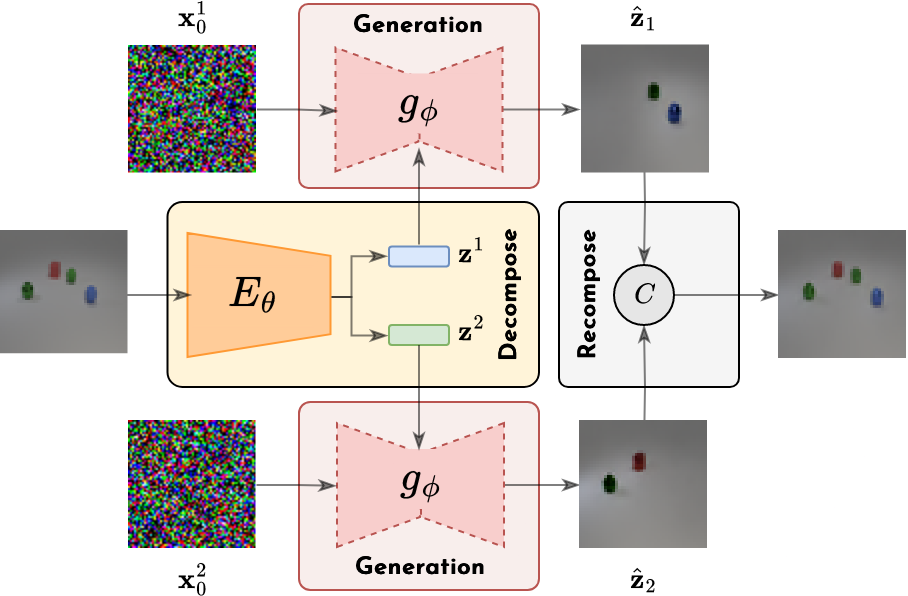

This website is still under construction and is linked to our paper submission to the ICML 2024 Conference.
In this paper, we target the extrapolation and out-of-distribution generation problem in generative models by introducing a generic compositional inductive bias. Leveraging state-of-the-art generative models in an encoder-decoder scheme, our approach focuses on compositional representation learning without any form of supervision. We perform experiments on image and audio data, demonstrating the adaptability of our model to different modalities and representations. Our Diffusion-based Representation Learning for Modality-Agnostic Compositionality (DIRCA), builds upon diffusion models and shows promising results in separating meaningful entities in both images and music, serving as a powerful baseline for future investigations around compositional generation and representation learning.
In this work, we use the same architecture for both image and (latent) audio data. While using more specialized architectures for each modality could lead to better results, we aim to show that our approach is generic and can be applied to different modalities and data representations without any modification. Therefore, we do not aim to achieve state-of-the-art results in generation quality, but rather to show that our approach could be a powerful baseline for future investigations around compositional generation and representation learning.
As depicted in the figure below, a sample is mapped to a set of latent variables through an encoder. These variables are used to condition a diffusion model that is responsible for generating a portion of the data. The generations are then fed to a composition operator that reconstructs the input.

For audio experiments, we apply the aforementioned approach in the latent space of a pre-trained Variational Autoencoder, specifically the EnCodec model. We map the audio samples to a continuous latent trajectory through EnCodec and then apply the DIRAC model. We did not train EnCodec, but relied on a pre-trained checkpoint provided by the authors.
In the following table, we report the reconstructions obtained through our model
trained with 2 latent variables on the mixuture of drums and bass stems of the MUSDB dataset.
This model (15.1M parameters U-Net + 500K parameters encoder) has been trained for 64000 iterations with
a batch size of 64 using the mean
composition operator (approximately 4 hours on a NVIDIA A6000 GPU). Please refer to the paper for more details.
While also providing the audio encoded in each latent variable, we emphasize that this model is not built with
the intention of performing unsupervised source separation in the latent space. Our goal, instead, is
to learn interpretable and composable representations and, in this case, these representations seem to align
with the drums and bass stems that compose the original audio. This "separation" emerges naturally from
the training setup, in an unsupervised manner, while using a latent representation of audio obtained with a
pre-trained open-source model.
Warning. Some audio examples may contain loud sounds. Please adjust the volume accordingly. We suggest
to use headphones for a better listening experience.
| Sample | Original Audio | Reconstructed Audio | Latent 1 | Latent 2 |
|---|---|---|---|---|
| 1 | ||||
| 2 | ||||
| 3 | ||||
| 4 | ||||
| 5 | ||||
| 6 |
In the following table, we report the generations-by-recomposition obtained with
the same model used for the reconstructions. We take two random input samples, decode them into their respective
sets of latent variables and then, once mixed, we recompose them to generate new samples.
A note on cherry picking. We drew some samples and produced the relative re-compositions, we then picked the following examples.
While this is a form of cherry picking we emphasize that we did not spend a lot of time selecting
the very best sources and re-compositions.
Warning. Some audio examples may contain loud sounds. Please adjust the volume accordingly. We suggest
to use headphones for a better listening experience.
| Sample | Original Audio | Reconstructed Audio |
|---|---|---|
| 1A | ||
| 1B | ||
| 2A | ||
| 2B | ||
| 3A | ||
| 3B | 4A | |
| 4B |
| Sources | Recomposed Audio |
|---|---|
| 1A + 1B | |
| 1B + 1A | |
| 2A + 2B | |
| 2B + 2A | |
| 3A + 3B | |
| 3B + 3A | |
| 4A + 4B | |
| 4B + 4A |
In the following table, we report the reconstructions and latent variables obtained with
a model trained on the drums stems of the MUSDB dataset. We train two models with, respectively, 4 and 8 latent variables.
As previously stated, we did not spend a lot of time cherry-picking the results. Here, we wanted to show how
the different latents can encode different elements of the drums such as the low-end or high-end of the kick, the snare or the hi-hats.
Warning. Some audio examples may contain loud sounds. Please adjust the volume accordingly. We suggest
to use headphones for a better listening experience.
| Sample | Original Audio | Reconstructed Audio | Latent 1 | Latent 2 | Latent 3 | Latent 4 |
|---|---|---|---|---|---|---|
| 1 | ||||||
| 2 |
| Sample | Original Audio | Reconstructed Audio | Latent 1 | Latent 2 | Latent 3 | Latent 4 | Latent 5 | Latent 6 | Latent 7 | Latent 8 |
|---|---|---|---|---|---|---|---|---|---|---|
| 1 | ||||||||||
| 2 |